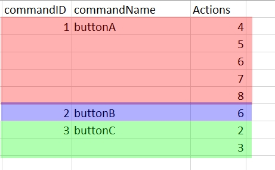

In the "Data" folder, you can find an example on how to format the .csv files for the buttons called "_Template_Commands.csv"
In more detail (Please note that the first line is reserved for headers):
-
The first column contains the button ID of each button.
Each ID is unique. (However it must only be unique in the same file. Meaning you can have one ID "1" in file A and one ID "1" in file B) - The second column contains the button name.
- The third column contains the transition tag values to apply once the button is triggered. Please refer to this link to see the correspondance between the transitions and their tag value.

Here, the red square highlights the buttonA (with id=1). This button has 5 transitions: 4, 5, 6, 7 and 8
The blue square highlights the buttonB (with id=2). This button has a single transition: 6
The green square highlights the buttonC (with id=3). This button has 2 transitions: 2 and 3
Reading this file using a method in an instance will add all of the buttons in the instance.